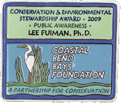

About Us
Our Goals
Science and the Sea is a production of The University of Texas Marine Science Institute on the Gulf of Mexico in Port Aransas, Texas.
The sea affects our lives in many ways - we relax by its shores and play on its surface, eat of its bounty and enjoy its beauty, it moderates our climate and fuels powerful storms, and it supports an amazingly rich and diverse ecosystem. Researchers know a great deal about how marine life survives and even thrives in the sea, how the sea is critical to human life on the land, and how man affects the vast ocean.
The goal of Science and the Sea is to convey this understanding of the sea and its myriad life forms to everyone, so that they, too, can fully appreciate this amazing resource. We do this through magazine articles, a radio program, and activities on our website. In all of these, we provide entertaining stories and activities that teach about the marine world and even convey how scientists approach, and ultimately solve, some of the oceans' mysteries.
The University of Texas Marine Science Institute began conducting research in 1946 and is the oldest marine laboratory in Texas. Some of the world's premiere marine scientists are based here and their research spans the globe: from the north slope of Alaska to the hydrothermal vents of the South Pacific; from the mangrove forests of Belize to the sea ice of Antarctica; and from the coastal bays and hypersaline lagoons of Texas to the coral reefs of Hawaii. Our graduate program trains future marine scientists through its master's and doctoral degree programs.
The Marine Science Institute is also home to Marine Education Services, a leader in marine education for school children, teachers, visiting college classes, and senior groups. Marine Education Services promotes interest in marine science through educational programs designed especially for teachers, students, and the general public.
Our Awards

Our Executive Producer was honored in 2009 for creation of Science and the Sea from the Coastal Bend Bays Foundation for Conservation and Environmental Stewardship through public awareness.
Our Staff
- Executive Producer: Dr. Lee Fuiman, Associate Director, University of Texas Marine Science Institute
- Producer: Damond Benningfield
- Announcer: Holly Braly
- Audio: Shayna Brown, Chez Boom Audio
- Script Coordinator: Heather Herrick, University of Texas Marine Science Institute
- Writer: Damond Benningfield
- Distribution: Casey Walker, StarDate Productions
Our Affiliates
Science and the Sea is heard on 257 affiliates in 46 states, District of Columbia, Canada, Guam, the Philippines, and New Zealand (see complete listing below). Science and the Sea is also heard in 52 countries on 9 separate channels of the American Forces Network radio on satellite.To become a radio station affiliate, contact:Casey Walker
- Email: casey@stardate.org
- Phone: 512-475-6760
The Marine Science Institute's monthly column, Science and the SeaTM, is an informative and entertaining article that explains many interesting features of the marine environment and the creatures that live there. Science and the Sea articles appear monthly in one of Texas' most widely read fishing magazines, Texas Saltwater Fishing, the Port Aransas South Jetty newspaper, the newsletter of the Texas Chapter of the American Shore & Beach Preservation Association , and the Heartland Of America online newspaper. Our article archive is available also on our website.